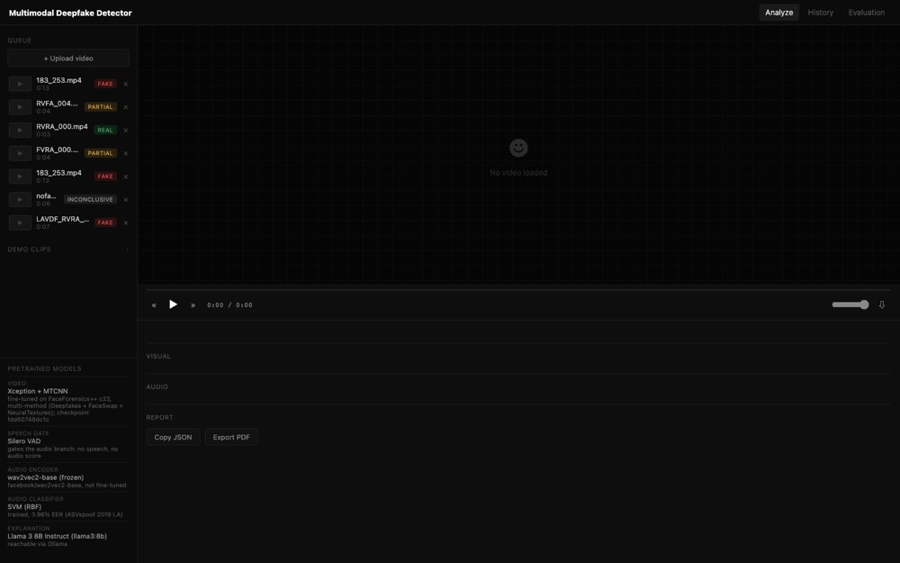
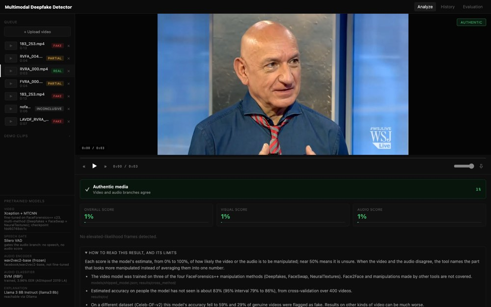
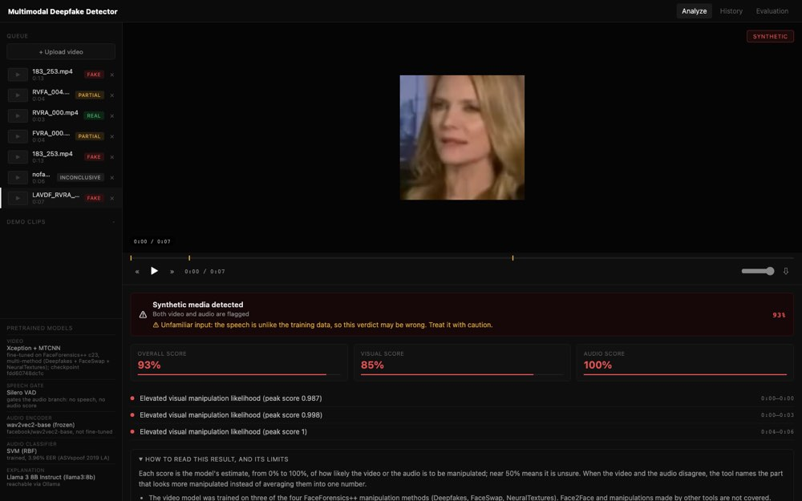
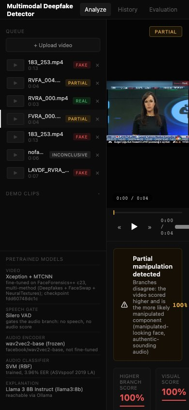

Design brief · minimum viable product
A deepfake checker that anyone can read
A working prototype already tells you whether a video clip looks manipulated, and whether the problem is in the picture or in the voice. It was built by and for engineers. This brief asks you to redesign it so that a journalist with no technical background can use it, understand it, and know when not to trust it.
01The product in one paragraph
You upload a short video (or pick an example). About 9 seconds later the tool gives a verdict. It checks the picture (the face) and the voice (the speech) separately and gives each a chance of manipulation. Most detectors blend these into one answer. This one does something different: when the two checks strongly disagree, it does not average them. It says the clip may be only partly manipulated and names the part that looks wrong, for example "the voice looks synthetic but the face looks genuine". It then writes a short explanation in plain English and lists its own limits.
"Explanation should be in layman terms, and technical terminology should be defined with a legend in a Learn more section, along with more details of the findings. Make it user friendly."
Requirement from the developer. It is the centre of this brief: the main screen speaks plain English, and everything technical moves into a Learn more section, where every term is defined in a legend.
02Who it is for
Professionals who need to decide whether to trust a clip, without machine-learning knowledge:
Journalist
- Sent a clip before publication; needs a quick, defensible read.
- Asks "can I run this?" and "what exactly looks wrong?"
Content moderator
- Reviewing a flagged upload among many.
- Needs the verdict at a glance, and needs to know when the tool itself is unsure.
Fact-checker
- Investigating a viral video.
- Needs details to cite: which part, how strongly, when in the clip.
Main device: a laptop (the tool runs locally). A phone layout is still needed; see Accessibility.
03Design principles
- Verdict first. The answer and its one-sentence reason are the first thing on a result screen. The video player is secondary. (The developer's choice.)
- Plain words on the main screen; technical words in Learn more. Every technical term that appears anywhere is defined in the legend.
- One vocabulary. The same verdict uses the same words everywhere: list, banner, explanation, export.
- Every number says what it is. Never a bare "93%". Write "93% chance the picture is manipulated".
- Doubt is as visible as the verdict. When the tool has reason to doubt itself, the warning must be at least as prominent as the verdict. It must never be a small line inside a confident banner.
- Never overstate. The tool gives likelihoods, not proof. See the honesty rules.
- Dark theme, polished. The developer's chosen direction. A light theme is optional.
04What exists today (v1), and what is wrong with it
A review of the current interface against Nielsen's ten usability heuristics (24 September) found 14 problems, 7 of them major. The main ones:
- Too technical. The main screen shows a checkpoint code (
fdd60748dc1c), "SVM (RBF)", "EER", "Spoof score" and "Lip-sync / AV-delta". - Four words for one verdict. FAKE, SYNTHETIC, "Synthetic media detected" and "considered fake" all appear for the same result.
- Unlabelled numbers. "Authentic media 1%" reads as "1% authentic". It actually means a 1% chance of manipulation.
- The verdict is hidden. The video fills the top 57% of a laptop screen, and the written explanation is below the fold on every result.
- The warning is too quiet. On a clip unlike anything the tool was trained on, the "may be wrong" warning is one small amber line inside a confident red "93%" banner, and that verdict is in fact wrong.
- Empty, unfinished first screen. It shows a smiley, "No video loaded", and example clips hidden behind a faint 10 px label.
- Hard to read. 8 of 13 measured text styles fail the WCAG 4.5:1 contrast minimum, 65% of text is under 12 px, and there is no phone layout.




Keep these, they work: real progress while analysing; a panel listing the tool's limits next to every result; a "No verdict" state that says why; "not available" instead of a fake 0%; a badge saying who wrote the explanation; marks on the progress bar at the suspicious moments.
05MVP screens
Check a video
- Upload by drag and drop or file picker (MP4, MOV, AVI, MKV; up to 200 MB and 120 seconds).
- "Try an example" list, visible by default, with plain names ("Newsreader, voice replaced").
- Recent checks.
- One line saying what the tool does and does not do.
Analysing
- Real progress from the server, shown as plain steps: finding faces, checking the face, listening for speech, checking the voice, comparing, writing the explanation.
- About 9 seconds is typical.
The verdict
- The core screen; see section 06.
- Verdict, reason, explanation, the two part-checks, when in the clip, any warning, what to do next.
Details and legend
- Expands on the result screen (or opens as a panel).
- Legend of every term, full findings for this clip, technical names, how accurate the tool is. See section 08.
How accurate is this tool?
- A plain summary first (for example "right about 83 times in 100 on people it has not seen before").
- The existing research tables stay below, for experts.
Past checks
- List of checked clips with their verdicts.
- Save a result as PDF; copy the raw data.
- Ask before removing a result (today it vanishes at once).
06The result screen, top to bottom
A content order, not a layout. Where each slot goes is your call, as long as slots 1 to 3 are visible without scrolling on a 1440 × 900 laptop screen.
07Result states and proposed wording
Every result is exactly one of these states. The wording is a proposal; refine it, but keep the meaning. "Picture" and "voice" are the plain names for what the system calls the video and audio branches.
| State (system name) | When | Headline and reason (proposed) | Tone |
|---|---|---|---|
REAL | The checks agree and the combined chance is below 50% | Likely genuineThe picture and voice checks agree, and together they point to a genuine clip. | genuine |
FAKE | The checks agree and the combined chance is 50% or more | Likely manipulatedThe picture and voice checks agree, and together they point to manipulation. | manipulated |
PARTIAL_MANIPULATION, picture named | The two checks differ by 35 points or more, and the picture scored higher | Partly manipulated: the pictureThe face looks manipulated but the voice looks genuine, so only part of this clip may be fake. | partial |
PARTIAL_MANIPULATION, voice named | The two checks differ by 35 points or more, and the voice scored higher | Partly manipulated: the voiceThe voice sounds synthetic but the face looks genuine, so only part of this clip may be fake. | partial |
PARTIAL_MANIPULATION, both below 50% | The checks differ by 35 points or more, but neither reaches 50% (rare; for example 44% against 0%) | The checks disagreeThe picture looks more suspicious than the voice, although neither is clearly manipulated. | partial |
| One part only | No speech was found, or no face was found | Likely genuine / Likely manipulatedOnly the picture was checked, because no speech was found (or the reverse). | as REAL or FAKE |
INCONCLUSIVE | No face and no speech | No verdictThe tool could not check this clip: no face was found and there is no speech. | no verdict |
| Unfamiliar input (added to any state) | The face footage or the speech is unlike the tool's training data | This result may be wrongThis clip is unlike the videos the tool learned from. Treat the verdict with caution. | caution |
Showing a chance in words: below 50% "leans genuine", 50% or more "leans manipulated", with a note that near 50% means the tool is unsure. These match the system's own cut-off. Do not invent other bands such as "high" or "low": the system has no evidence for them.
08The Learn more section
This section holds everything a curious or expert reader needs. The main screen stays simple. It has four parts:
1 · Legend
- Every term used anywhere in the tool, with a plain definition (section 09).
- Terms in the main text can link or show a tooltip that opens their legend entry.
2 · Findings for this clip
- Picture check: chance of manipulation, how many face frames were checked, a sample face crop, the per-frame chart.
- Voice check: chance of manipulation, seconds of speech found, waveform.
- How far apart the two checks were, and the 35-point line for "partly manipulated".
- Each suspicious moment, with its start, end and peak.
- Familiarity: was each part within what the tool knows? In words, with the measured value available.
- The explanation: who wrote it, and whether it passed the automatic check.
3 · Technical details
- The model behind each step (Xception, MTCNN, Silero VAD, wav2vec2, SVM, Llama 3 8B), each with a one-line plain description.
- The model version code and the training data names.
- These stay visible here: the developer wants the technical detail available, just not on the main screen.
4 · How accurate is this, and its limits
- About 83% accuracy (95% range 79% to 86%) on people the tool has not seen, from 400 test videos.
- On a different video collection (Celeb-DF) accuracy fell to 59%, and 29% of genuine videos were wrongly flagged.
- A genuine voice recorded somewhere unfamiliar can be wrongly called synthetic: in one test, all 100 genuine clips from another collection were flagged.
- Covers three common face-manipulation methods, not every method.
09Legend of terms (draft content)
Draft definitions to design with. They are accurate to the system; shorten the wording if you need to, but keep the facts.
| Term | Plain definition |
|---|---|
| Deepfake | A video or audio clip changed by software to show someone doing or saying something they did not. |
| Manipulated | Changed after recording, for example a face swapped, a mouth re-animated or a voice replaced. |
| Picture check | The part of the tool that looks at the face in each sampled frame. (Technical name: video branch.) |
| Voice check | The part of the tool that listens to the speech. (Technical name: audio branch.) |
| Chance of manipulation | The tool's estimate, from 0% to 100%, that a part of the clip was manipulated. It is an estimate, not proof. Near 50% means the tool is unsure. (Technical: P(fake).) |
| Partly manipulated | The picture and voice checks strongly disagree (35 points or more apart), so only one part may have been changed. The tool names the part that looks more manipulated instead of averaging. |
| Combined score | When the two checks agree, the tool combines them, giving slightly more weight to the check that was more accurate in testing (voice 54%, picture 46%). |
| No verdict | The tool could not check the clip at all, for example when there is no face and no speech. |
| Unfamiliar clip | The face footage or the speech is unlike anything the tool learned from, so its answer is less reliable. The warning does not change the verdict. (Technical: out-of-domain input, measured as a distance from the training data.) |
| Suspicious moments | Times in the clip where the picture check's estimate was high. The tool can say when, not what looks wrong. |
| Face swap | One person's face replaced with another's. |
| Lip-sync | The mouth re-animated to match different words. This tool does not measure lip-sync directly. |
| Voice cloning / synthetic speech | Speech generated by software to imitate a person or to sound human. |
| Written explanation | A short summary generated for each clip by an AI language model (Llama 3) from the results only. An automatic check compares it with the results; if it says anything the results do not support, the tool shows standard wording instead. |
| Accuracy | How often the tool was right in testing. About 83% on people it had not seen, meaning roughly 17 in 100 test videos were judged wrongly. |
| 95% range | The range the true accuracy probably lies in, given the size of the test (79% to 86%). (Technical: confidence interval.) |
| False alarm | A genuine clip wrongly flagged as manipulated. |
| Training data | The example videos and recordings the tool learned from: FaceForensics++ (faces) and ASVspoof 2019 (voices). |
| Model | A trained AI program that does one step. This tool chains six: MTCNN finds faces; Xception judges each face; Silero VAD finds speech; wav2vec2 turns speech into numbers; an SVM judges those numbers; Llama 3 8B writes the explanation. |
10Data available for every result
What the server already returns, so the design can rely on it. Nothing here needs new analysis.
| Field | Meaning | Example |
|---|---|---|
| verdict | One of REAL, FAKE, PARTIAL_MANIPULATION, INCONCLUSIVE | PARTIAL_MANIPULATION |
| video.p_fake | Picture check, chance of manipulation (0 to 1), or none | 0.9995 |
| audio.p_audio_fake | Voice check, chance of manipulation, or none (with audio.gated when no speech) | 0.0007 |
| fusion.gap, threshold_T | How far apart the checks were, and the 0.35 line | 0.9988 / 0.35 |
| fusion.implicated_modality | The part named when partly manipulated | video |
| anomalies[] | Suspicious moments: start, end (seconds), peak | 0.00 to 5.12 s |
| video.per_frame[] | Chance per checked face frame (up to 20) | 16 frames |
| video.sample_face_png_b64 | One cropped face image | 224 × 224 image |
| audio.speech_seconds, waveform[] | Seconds of speech found; waveform for drawing | 3.7 s of 4.9 s |
| video.ood, audio.ood | Unfamiliar flag, measured distance and limit | 55.3 of limit 99.9 |
| explanation.text, source, fallback_reason | The explanation, who wrote it (AI model or template), why the template was used | template |
| /api/limitations, /api/evaluation | The limits text and the accuracy tables | (lists) |
11Honesty rules (non-negotiable)
This is a forensic tool: a wrong impression can harm a real person. These rules come from the project's evaluation and are tested in its code.
Always
- Say "likely", "chance of", "estimate".
- Show the unfamiliar-clip warning whenever it is raised, at least as prominently as the verdict.
- Show "Not checked" or "No verdict" when a part was not checked, never 0%.
- Show who wrote the explanation.
- Keep the limits one click from every result.
Never
- Say "fake", "real", "proven" or "confirmed" as a certainty.
- Say what looks wrong at a moment ("the eyes blink oddly"). The tool only knows when; anything else would be invented.
- Name a manipulation method for a clip ("face swap detected"). The tool does not identify methods.
- Hide or soften the warning for a cleaner look.
- Use colour alone to carry the verdict.
12Accessibility and layout requirements
- Text contrast of at least 4.5:1 (WCAG 2.1 AA) in the dark theme, including labels and captions.
- Body text at least 15 px; nothing below 13 px.
- The verdict readable without colour: an icon plus words.
- Keyboard operable, with visible focus; the player and the moments list reachable by keyboard.
- Layouts at 1440 px (laptop) and 390 px (phone). On a phone, one column, the verdict first, the example list collapsed.
- It runs offline on the user's machine: fonts and icons must be bundled, not loaded from the internet.
13Out of scope for the MVP
- Accounts, sign-in, sharing links, cloud hosting.
- Checking more than one clip at once, or live streams.
- Any new detection ability, for example naming the manipulation method, describing what looks wrong, or lip-sync scoring.
- Changes to the verdict logic, the numbers, or the 35-point line.
14Deliverables and timing
| Deliverable | Detail | Needed by |
|---|---|---|
| Result screen, all states | The 8 states in section 07, desktop and phone, dark theme | Fri 25 Sep, evening |
| Start, analysing and Learn more | Including the legend layout and the tooltip or link pattern for terms | Fri 25 Sep, evening |
| Accuracy page and History | A plain summary above the existing tables; ask before removing a result | Sat 26 Sep, morning |
| Style tokens | Colours with contrast values, type scale, spacing, the verdict colour set | with the first screens |
What happens next: the developer builds the design in the existing HTML, CSS and JavaScript (no framework). A second round of user testing runs on the new design on Saturday 26 September, with the same tasks and the same usability questionnaire as round 1, so the two versions can be compared. Round 1 findings on the current interface will be shared as soon as they exist.
How success is judged: a first-time user can say, without help, (1) what the verdict is, (2) which part is suspect, (3) what a percentage means, and (4) when not to trust the result.